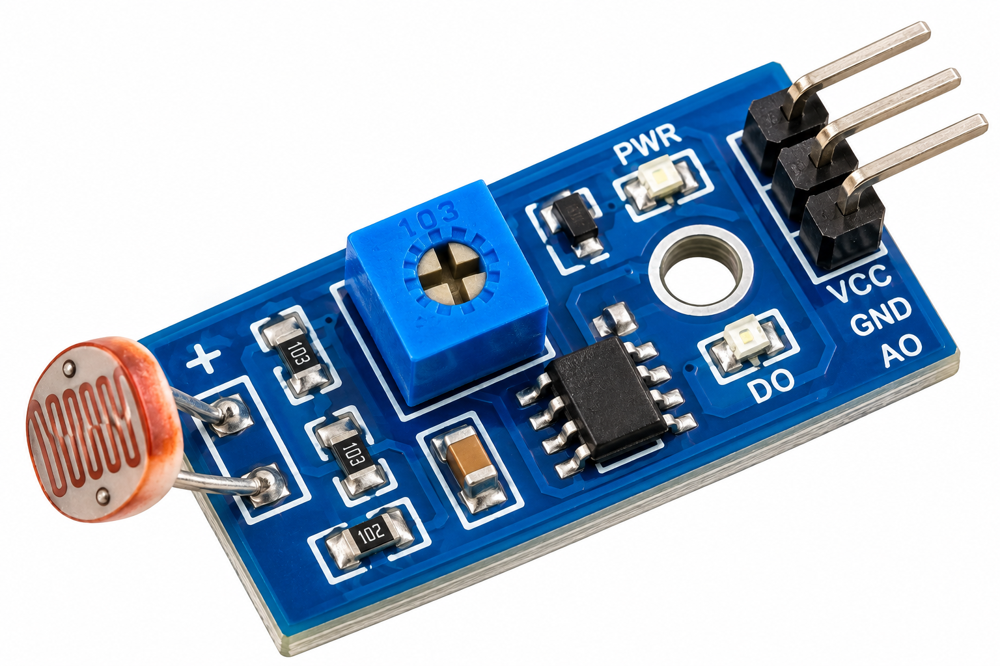
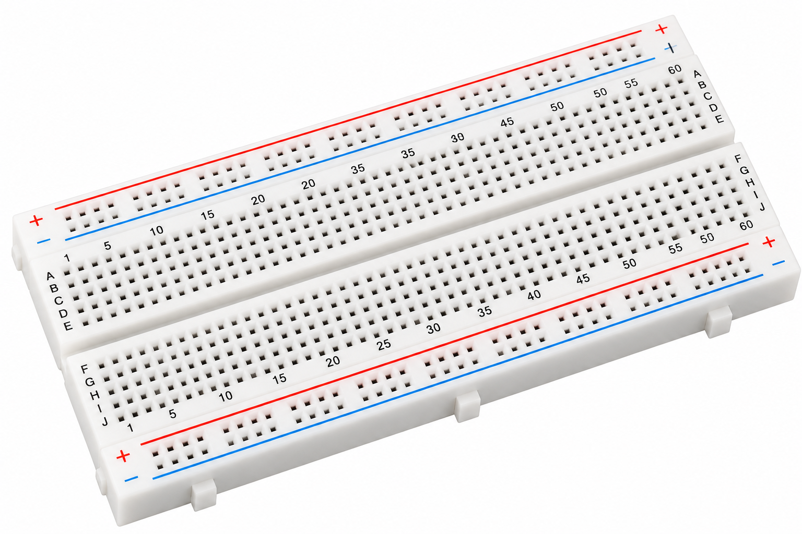

Aim
To build a wireless environmental monitoring dashboard using an ESP32, DHT22, BMP180, LDR module and I2C OLED, with readings available on a local web page.
About the Experiment
The ESP32 gathers temperature and humidity from a DHT22, barometric pressure from a BMP180 and ambient light level from an LDR module. It shows key values on an OLED and hosts a web dashboard with an additional JSON data endpoint.
Components Required
 ESP32 Development BoardQuantity: 1
ESP32 Development BoardQuantity: 1 DHT22 Temperature & Humidity SensorQuantity: 1
DHT22 Temperature & Humidity SensorQuantity: 1 BMP180 Barometric Pressure SensorQuantity: 1
BMP180 Barometric Pressure SensorQuantity: 1
LDR Light Sensor ModuleQuantity: 1 LM35 Temperature SensorQuantity: 1
LM35 Temperature SensorQuantity: 1 OLED SSD1306 I2C DisplayQuantity: 1
OLED SSD1306 I2C DisplayQuantity: 1
BreadboardQuantity: 1 Jumper WiresQuantity: As required
Jumper WiresQuantity: As requiredCircuit Connections
| Component pins | ESP32 connections |
|---|---|
| DHT22 VCC / GND / DATA | 3V3 / GND / GPIO4 |
| BMP180 VCC / GND / SDA / SCL | 3V3 / GND / GPIO21 / GPIO22 |
| OLED VCC / GND / SDA / SCL | 3V3 / GND / GPIO21 / GPIO22 |
| LDR VCC / GND / AO | 3V3 / GND / GPIO35 |
| LM35 VCC / GND / OUT | 3V3 / GND / GPIO34 (wired but not read by supplied sketch) |
All sensor grounds must share the ESP32 ground. The BMP180 and OLED share the I2C bus (SDA GPIO21, SCL GPIO22).
Circuit Diagram

Working Principle
Every two seconds, the ESP32 refreshes sensor readings and updates the OLED. The web server responds to requests at / and /data.
Procedure
- Place the ESP32 and sensors on the breadboard and connect each pin according to the table.
- Connect the OLED and BMP180 to the shared I2C bus.
- Install the ESP32 board package and the U8g2, DHT and Adafruit BMP085 libraries in Arduino IDE.
- Replace the sample Wi-Fi credentials when using real hardware.
- Upload the supplied sketch to the ESP32 and open Serial Monitor at 115200 baud.
- Note the IP address shown after Wi-Fi connection.
- Open that IP address in a browser on the same network to view the dashboard; append
/datato view JSON readings. - Change temperature, humidity and light conditions to observe the responses.
Code — Explore the Code
Click an explanation to highlight the corresponding code lines. The sketch below follows the supplied SOP.
Choose a topic to explore the sketch.
Check Your Understanding
Q1. Which GPIO receives DHT22 data? GPIO4
Q2. Which two devices share the I2C bus? BMP180 and OLED
Q3. Does the current code read the LM35? No; it reads temperature from DHT22.
Expected Output
The OLED shows temperature, humidity and light percentage. The browser displays temperature, humidity, pressure and light readings; the /data endpoint provides the same values as JSON. The Serial Monitor reports the device's IP address after connecting to Wi-Fi.
Result
The ESP32 environmental dashboard demonstrates sensor interfacing, local display output and wireless monitoring through a web server.
What You Learn
- Interfacing digital, analog and I2C sensors with an ESP32.
- Reading DHT22, BMP180 and LDR values.
- Displaying sensor values on an SSD1306 OLED.
- Creating a local Wi-Fi web server and JSON endpoint.
- Understanding the difference between connected hardware and code-enabled readings.